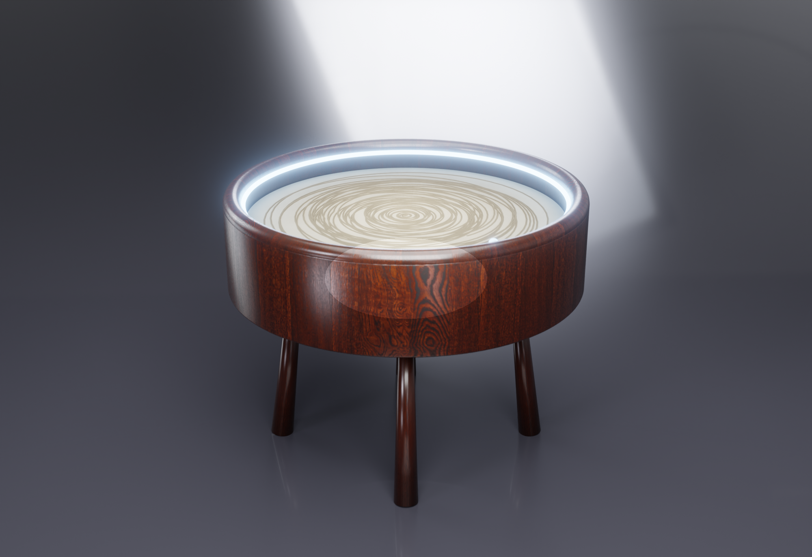

Ø60 cm polar (theta-rho) mekanizma, bir çelik bilyeyi kumun altından mıknatısla sürükleyerek sonsuz desen çizer. Türkiye'de üretilebilir; tam mühendislik + üretim paketi açık kaynak.

Nasıl çalışır
Dönen kol (θ) + üstünde kayan taşıyıcı (ρ). Her nokta bir (açı, yarıçap) — sub-mm çözünürlük.
Taşıyıcıdaki N52 mıknatıs, kumun altından çelik bilyeyi sürükler; bilye kumda gerçek oluk açar.
.thr desenleri (Atatürk imzası, spiral…) → G-code; WS2812B LED halka loş ambiyans ışığı verir.
Üretim paketi
PCB'den montaj kılavuzuna, maliyetten test fişine kadar bir üreticinin/donanımcının eline alıp ilerleyebileceği tutarlı set. Her doküman ayrı sayfada.